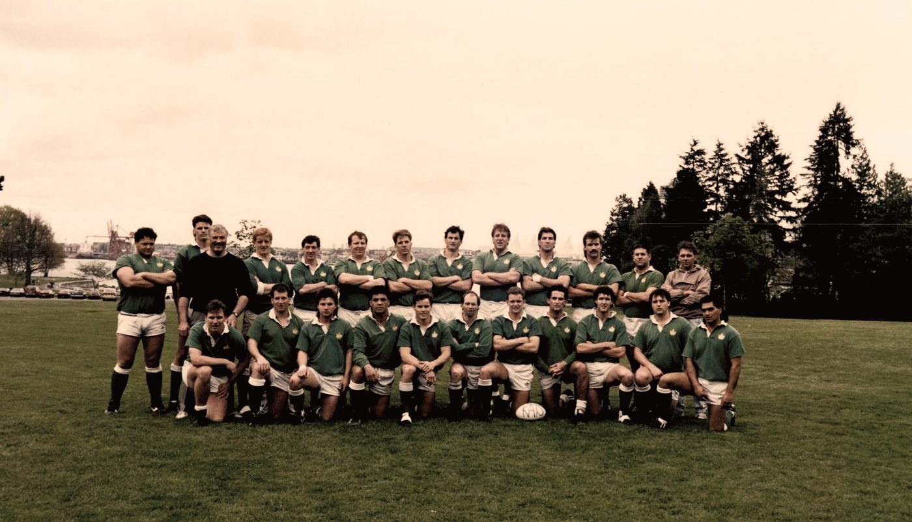
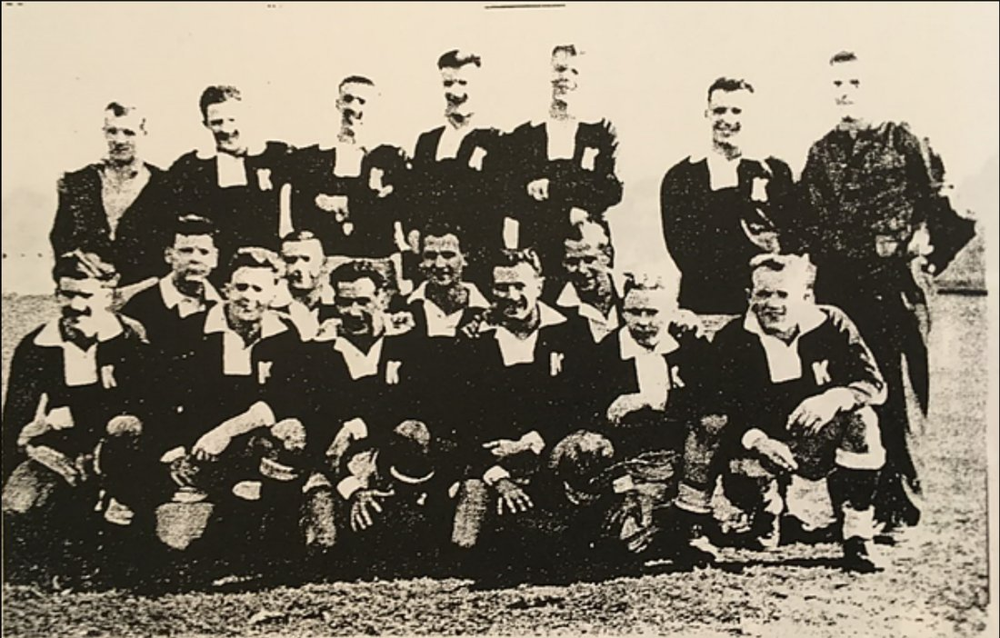

About Us
Since 1953, The Kats Rugby Club has been a staple of BC rugby. Ask locals about the Kats and the infamous G-House, chances are you'll meet someone who has heard of us or been to one of our clubhouse festivities.
Since the restart of Rugby after COVID, Kats have been a winning team, winning the provincial championships in 2021 & 2022. We are looking to expand back into a multiple team club while also maintaining our 'club first' culture.
Get In Touch
History
Since our founding in 1953, the Kats have topped the highest competition in BC, have gone on countless tours, hosted countless teams, and have had a riot all along the way.
Read More